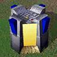
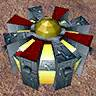
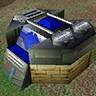
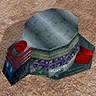
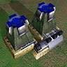
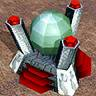
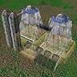
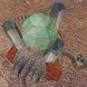

Absolute Annihilation/Units

|
Warning! This page is outdated! The information displayed may no longer be valid, or has not been updated in a long time. Please refer to a different page for current information. |
This is the Practical AA Guide. It has information such as ways to best use units, and things to avoid. To answer more technical questions, such as exactly how much damage per second a weapon is capable of, or precise build costs of a particular unit, you may want to visit the Technical AA Guide.
Basic descriptions, hints, tactics, and tips for Absolute Annihilation units. Level 1 units are those that can be built by basic factories, Commanders, and level 1 construction units. Level 2 units are those that can be built by advanced factories and level 2 construction units. Level 3 units are those that are built by Experimental Gantries.
Commander
{kind=link}
{kind=link}
You only get one Commander when you start the game, so he's worth special mention. Builds a small selection of things, but has a powerful nanolathe, allowing him to build quickly and assist other construction units. Packs a fairly nasty laser and the D-Gun, a weapon that drains tremendous amounts of energy but does absurd damage. Has a radar and sonar, and can cloak to hide from enemy units. (Though if he's not in a jamming field, they'll see him on radar anyway) Causes an absolutely massive explosion when killed. Moves slowly, but can travel underwater and climb very steep hills. He can also capture enemy units, but this is tricky to pull off, as an alert enemy will usually self-destruct them before he can finish.
There are two main victory conditions in Spring - Commander Dies, Game Continues (Continues) and Commander Dies, Game Ends (Ends). In Continues games, keeping your Commander alive is nice but not vital. This often leads to the Commander being used very offensively in the late-game, and can also lead to assorted lame early-game Commander tactics. In Ends games, keeping the Commander alive in the late-game against the many things that can kill him in a handful of shots becomes very important. He often spends most of his time assisting construction in the back of your base, under heavy jamming and AA cover.
Your Commander provides an excellent defence against early-game assaults and rushes. Do not, however, use your D-Gun unless your Commander's death is imminent or you are faced with a large, tightly-packed swarm of units. It eats up 400 energy a shot, which is a hefty chunk in the first few minutes of the game, and destroys any reclaimable wreckage. His laser should be more than enough against small groups of raiders. Whatever you do, do not D-Gun your own structures or units unless it's that or lose the game.
The Commander has a small but constant auto-repair, which makes him better able to handle fire from raiders and sporadic artillery hits. Note that the Commander takes extra damage from stationary defences and that these defences will usually prioritize him due to his high cost.
Factories
Factories are what let you construct mobile units. We don't describe individual factories in detail, as most are fairly boring. Level 1 factories build Level 1 units and Level 1 construction units. Level 1 construction units build Level 1 structures and the Level 2 factory for their type. So a Level 1 Construction KBot can build a Level 2 KBot Lab, but can't build a Level 2 Vehicle Plant. Level 2 factories build Level 2 units and Level 2 ("Advanced") Construction Units. Level 2 Construction units build Level 2 structures and, in the case of Advanced Construction KBots, the Level 3 factory.
All factories can only be built on land, except for Shipyards, Amphibious Facilities, and Seaplane Pads, which must be built in water. Hovercraft factories can be built on water or land. Amphibious Facilities are odd in that they can construct amphibious units of a wide variety of types. All other factories can only construct units of the appropriate type.
Resource Structures
Resource structures produce resources - metal and energy - for you to use to build other things. Quite often, but not always, the winner of a game is whoever builds and successfully protects the most resource-generating structures.
Common Level 1 Resource Structures
Metal Extractor
{kind=link}
{kind=link}
The basic metal-producing structure. These are fairly cheap, but require a little energy to operate, so your metal production will falter if you overtax your energy! They work a little differently from metal extractors in the original Total Annihilation. Each has a range, represented by the red circle around the extractor when you go to place it, over which they extract metal. The extractor's income is determined by the amount of metal within its range. On maps without well-defined metal patches, space out your extractors and avoid overlapping their ranges!
There is also an underwater version of this structure.
{kind=link}
{kind=link}
Wind Generator
{kind=link}
{kind=link}
A cheap, fast-building energy-producing structure. Wind generators can be built anywhere on the map, but their output varies randomly based on wind strength. They also need to be spaced out, as they explode fairly violently and don't have much health. Always be sure to check the wind strength before going into a game, so you know whether or not to build wind generators!
Solar Collector
{kind=link}
{kind=link}
More expensive than a wind generator, solars are also a lot tougher. They give you +20 energy. They close up into a more armored form when attacked. This protects your investment and lets them take a fair amount of punishment from raiders, but they don't produce any energy when closed.
Tidal Generator
{kind=link}
{kind=link}
Tidal generators provide cheap, constant power on water maps. The exact amount of energy a tidal generator provides varies from map to map, though they usually provide about as much as a Solar Generator. Always check the Tidal Generator income before starting a game on a water map.
Metal Maker
{kind=link}
{kind=link}
Metal Makers convert energy to metal, allowing you to continue expanding your economy even once all available metal has been claimed. Each Metal Maker consumes 100e and produces 1m.
There are also floating versions of this structure, these are somewhat more efficient, consuming 90e and producing 1m.
{kind=link}
{kind=link}
Advanced Solar Collector
{kind=link}
{kind=link}
The Advanced Solar Generator produces about four times as much energy (75 per tick) as a regular Solar Collector, but costs correspondingly more metal and significantly more energy. Their advantage over regular Solar Collectors is that they have a smaller footprint (4x4 instead of 5x5). They cannot close into a more armored form, but they do have more health.
Geothermal Powerplant
{kind=link}
{kind=link}
These expensive energy-producing structures can only be built on geothermal vents, but are a very efficient way to expand your energy production once you've got a basic economy going. Be careful about when you choose to build them, though, as the geothermal vents on most maps are placed in vulnerable locations.
Geothermal powerplants, much like the level 2 Moho Geothermal Powerplants, have a nasty explosion. Be careful what you build around them since they will be a prime target of opportunity.
Absolute Annihilation gives Arm increased output from geothermal powerplants.
Energy/Metal Storage
   
{kind=link}
{kind=link}
{kind=link}
{kind=link}
As the name indicates, these structures provide you with additional energy and metal storage. Since all resource structures in AA come with some energy/metal storage (as appropriate), these are not very useful. The energy storage can be handy for stockpiling energy for a push to level 2, but you're probably better off building Metal Makers to convert it to metal. The metal storage is virtually useless, as you should usually be using up your metal as fast as you can without stalling. However if you're reclaiming a lot of things, especially any Commander wreckage laying about, you'll need these in order to make sure you receive all your metal.
Arm Level 1 Resource Structures
Twilight
{kind=link}
A basic metal extractor that can cloak for a mere ten energy. This provides some protection against raiders, but is not infallible. The enemy can still spot them if they get too close, and there are only so many places a metal extractor can be put. When they explode, they paralyze everything in a quite big radius, and can thus be used as mines or traps if necessary. Watch out for this when killing them if the enemy has some units nearby, as paralyzed units are easy prey.
Core Level 1 Resource Structures
Exploiter
{kind=link}
A basic metal extractor with more armor and an LLT on top. Excellent for claiming territory once your basic economy's on solid ground or if your enemy likes raiding.
Has extra armor against attacks by Peewees/AKs and Flashes/Instigators.
Common Level 2 Resource Structures
Moho Mine
{kind=link}
{kind=link}
A bigger, better metal extractor. Takes more energy to operate, but extracts more metal from the same ground. These are typically the first things you'll want to build when upgrading to a level 2 economy, as you should easily be able to afford them with a mature level 1 economy. Unlike Moho Mines in XTA, they only cost 25 energy to operate. Start with your biggest and best-protected metal patches, and work out from there.
There are also underwater versions of this structure.
{kind=link}
{kind=link}
Fusion/Cloakable Fusion
   
{kind=link}
{kind=link}
{kind=link}
{kind=link}
These structures provide a high, constant energy income. Like Solar and Wind generators, they can be built anywhere on the map. The Cloakable variant is identical, except that it can cloak (the ability to make it harder for the enemy to find). Tt is slightly more expensive and produces slightly more energy. If you have no easily-defendable geothermal vents available, one of these (with accompanying flak cannons) should be next in your level 2 upgrade plan after you have a few Moho Mines online. A common newbie mistake is building a Fusion plant too early or building too many of them. Don't do this.
Fusions have an impressive explosion, so be sure to space them out.
There are also underwater versions of the regular Fusion plant.
{kind=link}
{kind=link}
Absolute Annihilation gives Core slightly better energy output on their fusion plants.
Moho Metal Maker
{kind=link}
{kind=link}
A bigger and better metal maker. Takes much more energy to operate, but produces much more metal, and does so more efficently. On metal-poor maps (or once you've upgraded all your Metal Extractors to Moho Mines), you'll want to produce these to expand your economy, powered by Fusion plants.
There is also an underwater version of this structure, which is the most efficent energy to metal convertor of all.
{kind=link}
{kind=link}
Metal Generator
{kind=link}
{kind=link}
A structure that provides a steady input of 1m at no cost other than initial construction. Fairly expensive and explodes quite violently, so space them out and protect them well.
Moho Geothermal Powerplant
{kind=link}
{kind=link}
A bigger, better geothermal plant. More efficient than a Fusion with comparable energy output, but produces a really big blast when destroyed. Build these only in safe areas or with ample defences against air and ground units, as they make very tempting targets.
Absolute Annihilation gives Arm a hefty boost to their output from Moho Geothermal Powerplants.
Advanced Fusion Reactor
{kind=link}
{kind=link}
A bigger, better fusion reactor. All Advanced Fusions come with a cloaking device. Usually only worthwhile if you're pressed for space or need energy really badly in the very late-game. Defend it very well, as it makes an extremely tempting target, and produces a very big explosion when destroyed. Can only be built by Advanced Construction Vehicles.
Absolute Annihilation gives Core a hefty boost to their Advanced Fusion Reactor's energy output. However, this is somewhat offset by the greater cost a Core player must pay if he or she wants to cloak their reactor.
Arm Level 2 Resource Structures
Prude
{kind=link}
A bigger, better geothermal plant. Doesn't produce quite as much energy as the Moho Geothermal Powerplant, but is cheaper and explodes significantly less violently. A good choice if you have potentially-threatened geothermal vents, or geothermal vents near other vital infrastructure. Also, keep in mind that it has more health than any other powerplant short of the mohofusion, so it can provide a nearly invincible component to your economy.
Core Level 2 Resource Structures
Moho Exploiter
{kind=link}
A more heavily-armored Moho Mine with a built-in heavy laser and rocket battery. Looks just like a regular Moho Mine until the enemy comes calling, then deploys its weapons and armor and goes to town. These are a little expensive for general use, but great on or near the front lines.
Behemoth
{kind=link}
A bigger, better geothermal plant with plasma cannons grafted on. Doesn't produce as much energy as the Prude and costs more, but can prove a nasty surprise for enemy assault forces and raiders, especially when near a couple Exploiters. Behemoths have the longest range of any turret except for LRPC/RFLRPCs.
Defensive Structures
Defensive structures are buildings that help protect your base. Most have guns, or are designed to help buildings with guns. Most don't do anything else, and are fairly well-armored. However, don't expect them to win you the game alone! At best, defensive structures will stop minor attacks and slow down major attacks until you can get your own combat units into position to respond.
Radar/Sonar/Jammer
Though unarmed, the humble Radar Tower is possibly the most important defensive structure, and one that less experienced players can easily underestimate. It shows enemy units within range and unobstructed by terrain as radar dots. This means that instead of noticing your opponent is trying to attack the back of your base when the back of your base starts blowing up, you notice when a bunch of dots head that way. You can then move your mobile defensive units - and I hope you have some - to intercept the attack, and start beefing up your fortifications. Even more importantly, they let you watch the general pattern of enemy movement, giving you a rough idea of what your foe's up to and where he's massing units and defences, which can be invaluable when placing defences of your own or planning an attack.
Longer range units will fire at enemy units shown on radar before they can see them. The accuracy of a unit is reduced when firing at a target that's only visible as a radar dot, so these shots will often miss. Units firing on radar dots can gain better accuracy if a player or one of his allies builds a radar targeting facility. Radar towers can see further than other units, so building them right next to other defensive structures may improve these structures' line of sight, allowing them to fire more accurately at units a little further away. Radar towers are cheap and fragile and often an early casualty of an enemy attack, so it doesn't hurt to build spares.
In the early game on spread out maps, consider building radar towers to 'protect' your expansion. Instead of trying to build defensive structures everywhere, build good radar tower coverage and position your mobile forces to easily intercept attacking forces.
Radar is not infallible. In addition to being blocked by terrain, it can be countered by radar jamming towers and units, which prevent radar detection of any units within their area of effect by either side. Yes, this means that you can't use radar to detect enemy units inside the area of effect of one of your jammers! There are also specialized late-game long-range weapons that quickly, cheaply, and efficiently destroy any radar or jammer towers within their area of effect. Finally, some units (such as the Arm Gremlin tank or Core Vamp fighter) are "Stealthy", and cannot be detected by radar.
Sonar Stations function similarly to Radar Towers, but can only detect units that are in the water.
There are advanced versions of all of these structures available with a higher cost, more HP, and a longer effective range. There are also floating radar towers that can be built on water.
Dragon's Eye
The Dragon's Eye, like the Radar Tower, provides you with advance warning of threats to your base. Dragon's Eyes have a long visual range, can be built underwater, and are stealthy (cannot be detected by radar) and can cloak (hiding themselves from visual detection) for a modest -10e cost. Building Dragon's Eyes around the perimeter of your base near the edge of the sight range of your other defensive structures can help them engage incoming enemies more effectively and gives you information about what is attacking your base.
In the late game, as more and more of the map gets covered by radar jammers, Dragon's Eyes become one of the most effective ways to keep track of your enemy's activities. They're virtually undectable once built and can't be fooled by radar jamming or stealth, though they still can't see cloaked units.
Dragon's Teeth/Fortification Walls
These defensive structures aren't really structures. They do nothing but block the movement of enemy units, but are very cheap and fast to build. They can take a lot of damage, but can be reclaimed by construction units. Heavy units, like Bulldogs or Goliaths, can drive over Dragon's Teeth, destroying them in the process.
Commanders and construction planes have a speed advantage in building these, as construction bots and vehicles do a small animation whenver they start or finish constructing something. This slows them down significantly on such cheap structures.
These can be used in lines to block an enemy advance. This is useful to prevent fast raiding units from simply rushing past your defences to attack key buildings in the back of your base. They can also be used in small lines or squares surrounding a defensive structure such as a heavy laser tower. This can provide some protection from small units with direct fire weapons such as the Flash tank.
Floating Dragon's Teeth can also be built on water.
One interesting use of Dragon's Teeth is terrain modification. DTs have a substantially higher "slope tolerance" (the maximum slope they can be built on) than most structures. They can be reclaimed to recover much of the metal that went into their construction. This makes them excellent for "clearing terrain" for building other structures. Just build a single DT or a small block of them, reclaim them, and build on the now-flattened land! This is great for putting up LLTs on hills, but can also be used to place Guardians/Punishers in unexpected locations. (Tip from Felix the Cat)
Level 1 Defensive Structures
Light Laser Tower
Very cheap defensive structure that you should build early and often. Will stop those pesky players who like to send small squads a minute or two in the game from doing damage to your economy that you may never recover from. This unit is good against light, fast ground forces, but is outranged by anything heavier. It is weak against air, but does hit sometimes. Often abbreviated as "LLT". They're good for covering mostly-blocked approaches to your base (like hills), as they can kill most light raiding forces.
A good way to defend against early to mid-game attacks is to build 3 LLTs in a loose cluster at the top of any hills or in choke points. Then build a couple of radar towers behind them to help spot enemies.
Throughout any game, even to the end, LLTs should be built in key areas of your base. They will come in handy in case an enemy slips through your outer perimeter.
Beamer/Heavy Light Laser Turret (HLLT)
Designed as a more permanent defensive structure for highly valuable inner-base areas as well as mid-game frontline duty. Beamers shoot a constant beam (get it? eh? eh?) which causes steady damage. This makes it ideal for dealing with attacks from both heavier units like Hammers/Thuds or much lighter units like Fleas, where it can instantly move on to the next target when the first one is destroyed, rather than waiting for a lengthy cool-down period. Probably the most useful function of a beamer is that it slightly outranges an LLT, making it ideal for front-line construction wars. While a Core player must use an HLT to outrange his enemy's LLTs, the Arm player can drop in a Beamer much more quickly that will outrange and destroy the enemy LLTs.
The HLLT, on the other hand, is pretty much just a beefed up LLT. It has two turrets, allowing it to target two enemies simultaneously or concentrate on a single one. They have more than their fair share of hit points.
Defender/Pulveriser Missile Tower
Very cheap defensive structure. It can provide protection against early air rushes. Does not need to be built as early as LLTs, as building an air force is slower. Will take out level 1 fighters and level 1 gunships easily. Effective against level 1 bombers, but several are needed if the opponent attacks in numbers. Not a cost-effective defence against level 2 air, and quite easy to destroy. Will not shoot at land units. Often abbreviated as MT.
There are also floating versions that can be built on water.
Packo/SAM Anti-air Turret
These are much more durable than standard missile towers and fire homing missiles quite rapidly. They are good at taking out large number of lighter planes quickly, making them a very effective fighter swarm counter. They will struggle to kill level 2 gunships and bombers unless used in large numbers, making flak cannons and level 2 missile towers a better choice against these units. The Packo can retract into a shielded underground state, largely protecting it from ground attack. The SAM just has more hitpoints.
Chainsaw/Eradicator Anti-bomber Turret
Moderately expensive heavy-duty version of the missile towers. Fires a rapid stream of missiles. Quite tough to destroy and can take out large numbers of level 1 air units. Does ok against level 2 air units, but Flak cannons are a better option by this point as they're much more effective and not much more expensive. Will not shoot at land units.
Besides Mercury/Screamer towers, these are the longest-range anti-air units you can build.
These buildings do extra damage against bombers.
Sentinel/Gaat Gun Heavy Laser Tower
Moderately expensive defensive structure. Longer range and harder hitting than a LLT, can do serious damage to even level 2 attackers. Effective against land but not air. Can be outranged by longer-ranged level 2 ground units. Often abbreviated HLT. These are vital for protecting your expansions and base in the mid-game, as they can destroy massive swarms of L1 units. They require energy to fire, though, so be sure to have ample power available.
Keep in mind that the HLT has very poor rate-of-fire, so a swarm of fast, light units can easily rush through an HLT-defended line. Because of this it is important to always mix your defenses and include smaller defensive structures.
There are also floating versions that can be built on water.
Guardian/Punisher Plasma Cannon
Expensive plasma cannons. Quite a long range and pack a fair bit of punch. Many games begin with an expansion phase with players marking out territory. Once the territories start to clash in the middle, you can almost guarantee that one or both players will start building plasma cannons. These can then kill all the LLTs and HLTs in the opponent's front line. Once a cannon is completed it will start shelling any enemy forces that are within range. It can be set to "High trajectory", which causes it to fire more damaging but highly inaccurate shells with a large area of effect in a high arc, or "Low trajectory", which causes more direct, more accurate, but less powerful shells to be fired. "High trajectory" should be preferred for bombardment, while "Low trajectory" should be used during defensive action unless targetting extremely-slow units. "High trajectory" will lead the target, so attacks of fast units can trick the Guardian into leading so far that it will fire into your own base.
Note that this defense does double damage vs. naval units. As such, it is a critical resource in mixed land-water maps. "Low trajectory" should be preferred when attacking aquatic targets.
The normal reaction is then for the enemy to rush at the Guardian with all available nearby units. An inexperienced player may find he has not adequately protected his Guardian with LLTs, HLTs, or mobile forces, and will then lose a unit that cost a large amount of resources to build. More experienced players learn to build adequate protection or place their Guardian in an established position. This allows them to to devastate the enemy's fixed defences and kill many of the units sent to take out the Guardian, yielding a net metal gain. In some circumstances it may be better to retreat from the enemy's Guardian position and quickly tech to level 2 or build a small force of Thunders/Shadows for a definitive assault rather than losing units in a futile counter attack.
Another option is to construct a radar jammer near your front lines, which prevents the Guardian from auto-targetting them until something actually sees the units. This allows you to construct a Guardian of your own and return fire.
Anenome/Jellyfish
The Anenome/Jellyfish are the only land-based anti-submarine weapon in AA. They launch depth charges that can damage submarines and submersed amphibious units. As land structures, most submarines cannot attack them. Their very short range means that they have to be built on the very edge of your coast, and are not a good general-purpose anti-submarine solution.
These do extra damage against amphibious units, and are therefore a good choice for defending a shoreline against a "fully submerged" opponent.
Harpoon/Urchin
These floating torpedo launchers provide close-range anti-submarine/anti-ship defence. They can only be built in water, and can only attack units in the water. They're effective against raiders and submarines, but don't expect them to do much against a serious surface vessel assault, as even the humble plasma cannon on the Crusader/Enforcer outranges them by a significant margin. They are very effective against amphibious units, which move slowly and are unable to fire back.
Cannot attack Hovercraft.
Dargon's Claw/Dragon's Maw
These are stealthy defensive structures (really stationary units) that can disguise themselves as Dragon's Teeth. When disguised, they can take significant amounts of damage, just like any "pop-up" weapon. If an enemy wanders into range, they'll reveal themselves and attack with a short-ranged lightning cannon (Arm) or flamethrower (Core). When destroyed, they leave behind ordinary Dragon's Teeth.
Level 2 Defensive Structures
Flakker/Cobra
Late-game anti-aircraft defence, flak cannons are one of the two replacements for MTs. They're relatively short-ranged, but do a lot of damage, fire quickly, and have a massive area of effect. They're incredible against gunships, which tend to cluster, allowing the flak cannon to damage or destroy several with a single shot. Put these near vital late-game structures to prevent your enemy from swarming and destroying them with gunships. Flak cannons cannot attack ground units.
There are also floating versions that can be built on water.
Mercury/Screamer
These upgraded MTs provide late-game anti-aircraft defence. Their guided missiles have a very long range - roughly half that of a VLRPC, do enough damage to kill almost any plane, and have an impressive blast radius. Very good against level 2 bombers and fighters. Cannot attack ground units. These units fire quite slowly, so should not be relied on as a primary anti air defence.
Annihilator/Doomsday Machine
The big brother of the HLT, these structures fill the same role in the late game. Their weapon, affectionately referred to as the "Blue Laser of Death", is slow-firing but capable of destroying most units in a single shot. They have an impressive range, but are still outranged by several kinds of artillery, so don't expect them to create an unbreakable defence!
Assaulting a line of BLoDs in the late game can be challenging, especially if they're properly supported by mobile units and anti-air. A good choice is to exploit their slow refire time and throw a swarm of fast, light, cheap units (like Flashes/Instigators, or even Jeffies/Weasels or Peewees/AKs) at them first, then hit them with longer-ranged units (Sharpshooters, Morties, Penetrators, Vanguards, Catapults, Tremors, etc.) while they're chewing on those. If the enemy's neglected to give his BLoDs proper AA support, gunships or bombers can be very effective. If all else fails, a barrage of Cruise Missiles will probably work.
Ambusher/Toaster
The big brother of the Guardian. They have a bit more range and a bit more firepower. When not in use they fold away into a concrete bunker. This allows them to survive much larger amounts of damage, making them virtually immune to long-range artillery or nuclear weapons.
Currently does triple damage to naval units so it should be preferred over the L1 plasma cannons in naval maps.
Moray/Lamprey
Heavier versions of the Harpoon/Urchin. They do more damage and have a slightly longer range, but are still largely ineffective against surface vessels. These structures are totally under water, and so can only be targeted by depth charges.
Cannot attack Hovercraft.
Big Bertha/Intimidator
These massive plasma cannons, often called Very Long-Range Plasma Cannons (VLRPCs) can deliver large amounts of firepower across a significant portion of even the largest maps. Their extreme range and destructive power are compensated for by their poor accuracy, low health, and high energy cost per shot.
At first these appear to be a game ending weapon. They are capable of attacking pretty much anywhere on many maps, and so could, in theory, destroy an entire base. In practice, these seem to take a long time to do significant damage. Many of the more critical structures, such as factories or Fusion Plants can survive fire from a VLRPC for long enough for a construction unit to repair the damage. Others can simply be rebuilt once the cannon's moved on to other targets.
Sustained fire from several of these cannons over a base acts as an effective siege mechanism. It makes it much harder to build, as anything under construction is quite vulnerable to being destroyed. Construction units are also quite vulnerable, and many can be taken out at once by a lucky hit. This can gradually tilt the balance of economic power in favour of a player with the VLRPC, even with the hefty cost of each shot.
Once one of these cannons starts to fire, there are several possible replies. An aggressive opponent will normally search for the VLRPC doing the damage, probably with scout aircraft. Observing the direction the shells are coming from will give a reasonable indication of where to look. If the cannon has been built without considerable protection, it will normally be attacked and destroyed. If it is heavily protected, the opponent may feel that they must attack anyway and lose a lot of units for nothing. Other options include building your own VRLPC (or better still half a dozen) scattered throughout your base to respond to your enemy's attacks. Some players may try building a deflector to nullify the effect of the VRLPC, but this can be prohibitively expensive, especially if you try to carpet your entire base. Building radar jammers can be more useful, as these cannons won't fire at something they can't see. Even with a jammer up, a few cheap air scouts will usually reveal plenty of targets for these cannons to fire at, so they typically have to be backed up with a Mercury/Screamer or two and some smaller MTs near the edges of your base.
Vulcan/Buzzsaw
A rapid-fire VLRPC that's even less accurate than its single-shot cousins. Definitely an Uberweapon. Like the Krogoth and Orcone, there's no reason to build one of these in most games, unless all other porc-cracking options have failed. It drains energy like mad, but its high damage, absurd rate of fire, and insane scatter will destroy all but the most hardened bases. Give it a lot of support, as your opponent will be coming to kill it as soon as it opens fire on him.
Protector/Fortitude
The Protector/Fortitude are purely defensive structures. They have no offensive weapons, but can intercept any nuclear weapons whose trajectories cross their operating range, which is displayed as a circle on your radar, as long as they have ammo. A must in most games as soon as your level 2 economy is on a solid footing, even if just as a precaution against a last-ditch strike by your enemy. In a Commander Dies, Game Ends game, you will want to keep your Commander well inside the range of a Protector/Fortitude at all times.
You need to construct ammo stores for this weapon. This is done using the normal construction interface. Standard practice is to queue up at least 50 rounds while it's being built and then leave it. If you ever have to intercept more than 50 nuclear missiles, you're doing something wrong.
Be sure to give these good AA cover. Standard practice when launching a nuke strike is to send a mob of Phoenix/Hurricanes to kill the enemy's anti-nuke, then follow up with a nuke volley.
Retaliator/Silencer
The Retaliator/Silencer are more offensive weapons than defensive weapons. They can fire nuclear missiles (which must be constructed before launch) all the way across any map, each of which can destroy a substantial portion of an enemy base. Very few things (such as specialized structures that are in an armoured state by default) can survive a nuke blast, though the missiles can be easily intercepted by Protectors/Fortitudes.
Juno
The Juno is a much more limited ballistic missile launcher. Its missiles cannot be intercepted, but do no damage to normal units. They will, however, destroy all radar, sonar, or radar/sonar jammer units within their area of effect, and will also destroy Dragon's Eye cameras.
Deflector
The Deflector is one of the few proper counters to VLRPCs, other than extensive jamming and AA. It generates a sheild that stops all manner of plasma weapons, gauss shells, and EMG fire, but it cannot deflect lasers, missiles, flamethrowers, lightning shots, or bombs. The field affects all fire directed into it from outside, but will not affect any shots fired from inside the field. This means that your units can safely fire out, but also that the field will be ineffective if the enemy manages to get inside.
The sheild needs to be charged to stop shells, you can determine it's level of charge by how the sheild appears, a barely visible sheild has no or very low charge whereas a bright white sheild is fully charged. The sheild consumes energy to charge.
The sheild can hold it's onw for quite a while against VLRPCs, bur RFVLRPCS can bring them down near instantly.
Pitbull/Viper
Shorter-ranged pop-up weapons, the Arm Pitbull fires a line-of-sight gauss projectile and the Core Viper fires heavy rockets. These structures fill about the same role as an LLT in the late-game and can, if you have the resources, make good support for a BLoD or act as replacements for destroyed HLTs. A cluster of these structures packed into a chokepoint or lined up in front of some Annihilators/Doomsday Machines can do quite a lot of damage. When not in use, they fold away into a concrete bunker, making them effectively immune to long-range artillery and even nuke strikes.
Arm Level 2 Defensive Structures
Detonator
The Detonator fires ballistic EMP missiles that paralyze units caught inside the blast. Their projectiles cannot be intercepted, making them very good at "preparing" enemy defensive structures or units for an attack. Like nukes and anti-nukes, the Detonator must build each shot before it can be used.
Core Level 2 Defensive Structures
Inferno
Wide-arc flamethrower. Good against swarms or for use in conjunction with several other Infernos against bigger units, or simply as one more extra support turret in a massively fortified front line.
Catalyst
A short-range tactical nuke launcher. The Catalyst's ballistic missile cannot be intercepted by anti-nukes but do significantly less damage than full-sized nukes. This makes them poor at destroying bases, but very good at softening up an enemy defensive line before an attack.
Utility Structures
They don't, strictly speaking, help you kill your enemy, make more units to kill your enemy, or prevent your enemy from killing your base, but these structures can be important all the same.
Targeting Facility
This Level 2 structure makes your fire against targets that can be seen only on radar substantially more accurate. It's fairly costly and takes a reasonably hefty chunk of energy to operate, but can be very useful for bombarding your enemy's defences from outside of their effective range.
There is also a floating version of this structure, which is very useful for naval battles, as engagements between surface ships will often happen without either side ever seeing the other.
Air Repair Pad
This Level 2 structure makes maintaining a large fleet of aircraft much easier. When switched on, it consumes a small amount of energy (250), and aircraft with "patrol" or "attack" orders will, when they're down to a certain health percentage, seek out an open air repair pad, land there, get repaired, and then return to carrying out their orders. The health percentage can be configured in the unit's orders panel.
KBots
KBots are units that use legs to move. They're generally more lightly armed than vehicles and can take less damage, but are cheaper, build faster, and can cross rough terrain and climb hills much better. KBots are generally good for massed assaults or surprise attacks over difficult terrain. The exception is "Level 3" KBots, which have incredibly powerful weapons and can take absurd amounts of damage.
Common Lvl 1 KBots
For many lvl1 units, there's no significant difference between the Arm and Core versions. These units get listed here.
Peewee/AK
Small cheap infantry KBot. The die very quickly to any significant opposition, but are speedy and can see farther than other L1 KBots. Can be used for scouting, swarming and as cannon fodder mixed with more valuable units. Good for early attacks on an enemy base, but they become obsolete very quickly.
Rocko/Storm
Slightly more expensive KBot with a long-range rocket launcher. Together with Hammers/Thuds, Rockos/Storms will tend to form the backbone of an early KBot force. Their rockets have a long range but can't fire over other units. Position them carefully, as they will occasionally try, damaging your units in the process! (Using a line-movement command works very nicely for them) Their long range lets them get off at least a couple shots at most L1 defensive structures. They outrange LLTs, but cannot fire at them effectively without spotters.
Hammer/Thud
The Hammer and Thud fire small plasma shells, which are shorter-ranged than Rocko/Storm rockets, but can fire over other units and small terrain obstructions. This means that most units in a mass can fire, whereas for many other units only the front line can fire. They can also fire over wreckage, Dragon's Teeth, and other obstructions. Hammers and Thuds are best used as early heavy main battle units.
Jethro/Crasher
Fires guided missiles and can only attack air units. Basic level 1 mobile anti-air. Pretty much a walking missile tower. They're generally useless when compared to other forms of anti-air, so should only be used if you have no other option for mobile anti-air. Otherwise, prefer the static structures, or fighters, or flak tanks.
Arm Lvl 1 KBots
Warrior
Costs a fair bit more than any other level KBot and is very slow. Has a lot of health and two fast-firing lasers. The Warrior is an excellent defensive unit, as it has a lot of health and powerful weapons. While slow-building and expensive for a L1 KBot, a Warrior is almost the equal of a Zeus, and a small force backed up by other L1 KBots can be an excellent assault force.
Flea
Super cheap. Very fast. And dies if you yell at it. Possibly try building a few of them first on large maps and sending a few towards your opponents. Their speed and cheapness may catch them off guard if you are lucky. Has a nearly-harmless weapon that most units can outright ignore, so pick your targets carefully if using it for attack.
Core Lvl 1 KBots
The Core has no unique Level 1 KBots.
Common Lvl 2 KBots
Decoy Commander
Useless in Commander Dies, Game Continues games. In Commander Dies, Game Ends games, these units are very handy. They can be used to lure the enemy into making futile or ill-conceived attacks in hope of killing your Commander and wiping out your army. Does absolutely nothing else, but has a number of features to make it a more convincing decoy.
Rector/Necro
The stealthy Rector and Necro can bring other units back to life, provided their wreckage hasn't taken too much damage. While this is costly, it can allow you to recover from a well-executed attack by pressing the reanimated corpses of the enemy's attack force into your service to supplement your own army.
Invader/Roach
The humble Invader and Roach have no purpose in life beyond crawling towards the enemy extremely slowly and exploding extremely violently. These units can climb very steep hills and are amphibious, allowing them to pop up from unexpected directions. They die very easily, but if you can slip them past the enemy's defenses, they'll do a lot of damage to his economy. Their explosions are significantly more destructive if you self-destruct them.
Take note that they are extremely small targets moving at a substantial speed so most non-beam-weapons will miss them.
Infiltrator/Parasite
A stealthy, cloakable KBot, the Infiltrator and Parasite are totally unarmed. They're good for finding out what your enemy's up to. They have the ability to create a medium sized paralysing explosion when they self destruct, making them useful for getting past an enemy's defences.
Arm Lvl 2 KBots
Fido
A very average level 2 KBot. Weaker than a Zeus or Maverick but faster and cheaper. Versatile but not particularly good at any one thing. The Fido has two fire modes, which can be toggled by switching its "Active State" between "On" and "Off". The default uses a long-range, slow-firing direct-fire gauss cannon. It's fairly accurate but relatively low-damage. The "Ballistic Cannon" mode fires a less-accurate shell that travels in a higher, ballistic arc, allowing it to fire over other units, Dragon's Teeth, and hills.
Zipper
Fast swarm unit with a short range direct fire weapon. Masses of these can survive surprising amounts of fire to do damage to undefended areas of a base. Seem to be able to push level 1 units out of the way, and are also very good at finding their way through wreckage fields due to their small size.
Maverick
Moderately expensive Kbot packing two gauss guns with medium range. Average durability and speed for an L2 unit, but capable of doing impressive damage. It destroys L1 units and light defences with ease. The Maverick also auto-repairs in combat and has a longer visual range than most units, making one or two good "spotters" for a unit of other KBots.
Zeus
Slow and tough. It has a short-ranged but powerful lightning cannon. In numbers they can take and dish out a lot of damage, and are excellent defence-busters in the mid-to-late game.
FatBoy
Slower and tougher than the Zeus, the Fatboy carries a massive plasma cannon with a long range, high damage, and large area of effect. Very good at supporting swarms of Zeuses, but watch what they're shooting at to make sure they don't blow up your own units.
Pelican
This unique amphibious KBot travels quickly over the surface of the water. It packs a direct-fire laser for use against ground units and a homing missile launcher for use against aircraft.
Eraser
A mobile radar jammer. Useful for keeping the enemy from noticing an attack force until it's too late.
FARK
The Fast Assist Repair KBot can't build much, but is cheap and has a good nanolathe. This makes swarms of FARKs excellent assistants for primary construction units. FARKs are also fairly small and fast, which makes them better at supporting combat units than regular construction units.
Sharpshooter
One of the nastiest Arm Lvl2 Kbots, the Sharpshooter is stealthy and can cloak, making it very hard to spot when it's not firing. Even when firing, it can be tough to find, as its weapon is invisible, but has a very distinctive noise. Its weapon is very slow-firing and long-range, and does absurd amounts of damage. It does even more absurd damage to Krogoths, Orcones, and Juggarnauts, making swarms of Sharpshooters an excellent counter against Uberweapons, provided you have something to soak up enemy fire while the Sharpshooters do their work.
Recluse
A spider KBot that can climb up almost anything. Can cause nightmares for unprepared opponents who don't think land units will be able to cross a steep terrain barrier, and as a result don't build any suitable defence in that direction. It fires heavy rockets that aren't particularly fast or accurate.
Sometimes you can climb these halfway up a steep slope near some enemy units and stop. The defenders units won't be able to shoot you because they would have to do so through the rock, but you can lob rockets up and over.
Spider
Another spider KBot, similar to the Recluse but smaller, faster, and armed with a paralysing weapon. Even on open ground, the paralyzer weapon makes it an excellent unit to mix in with an assault force, as a couple of shots can take an enemy unit out of the battle for a few seconds, and will probably focus all the enemy's fire on the Spider.
Scarab
A mobile anti-nuke. Useful for protecting a force of ground units dispatched to assault a nuclear missile silo, or for covering an expansion until you can get a proper anti-nuke built there.
Core Lvl 2 KBots
Pyro
Core's level 2 swarm/assault unit unit. Halfway between a Zipper and a Zeus in toughness and speed. Packs a flamethrower that can dish out a lot of damage to multiple units if you get within its short range. Doesn't leave wreckage, making it an excellent raider. Generally, you'll want to back these up with Cans.
Can
Silly looking KBot that waddles along fairly slowly, but don't laugh if they are coming to get you. Fairly expensive and very tough. Packs a pretty fierce punch with its laser weapon, but does not have a big range. Enemy units can sometimes retreat, fire, and then continue retreating, staying out of The Can's range the entire time. They'd better hope they kill it before they run out of room to retreat, though!
Sumo
Take The Can and make it much tougher and slower. Longer weapon range and more power, as well as a much faster fire rate. Doesn't look quite as silly. Can be used as an extremely slow but hard-to-stop offensive weapon, or as a mobile HLT in your base. Good at countering light Level 3 KBots. Like the Can, it has a combat auto-repair.
Morty
A support KBot with a very big gun. Has a long range and fires fast, but doesn't do a lot of damage and isn't particularly durable. Keep them behind a line of Cans, Sumos, and Pyros, and use them to bombard enemy defences.
Gimp
A faster, weaker, amphibious version of the Can. Packs a slightly weaker version of the Can's lasers and a torpedo launcher. The torpedoes are extremely weak against submarines, though, so don't try using this as a general-purpose underwater combat unit!
Freaker
A fast-moving construction unit, the Freaker has a very eclectic build menu. It can construct mines, static defenses, and some combat units. Using them to construct Cans or Raiders near the front lines to reinforce your assault force can be very effective!
Dominator
Another artillery support KBot, the Dominator fires vertically-launched rockets. These are only slightly longer-ranged than the Morty's shells, but are much more powerful and can fire over practically anything. Protected by a wall of Cans and Sumos, Dominators are wonderful at destroying structures of all kinds. Just don't try using them on mobile units!
Voyeur
A walking radar tower.
Termite
This KBot can climb over practically anything. It's fairly tough and packs a heavy laser. Great for surprise attacks against an unprotected flank of the enemy base, but don't expect them to last long on the front lines.
Skuttle
A bigger, badder version of the Roach. Not only does it make a bigger bang, but it can cloak too. Combined with radar jamming, a Skuttle can blast an impressive hole in even the toughest defences.
Leejen
A light and fast but totally unarmed scout KBot. Cheap unit, good for scouting ahead of a force for things like stealth units, mines, and enemy defences. Has a very short-ranged radar for spotting cloaked units, etc.
Common Lvl 3 KBots
Avatar/Mauler
A mobile Big Bertha/Intimidator. Slow and dies pretty much as soon as the enemy looks at it, but can devastate enemy positions from unexpected directions.
Arm lvl 3
Orcone
An Uberweapon. Costs absurd amounts of resources. Slow, but will destroy pretty much anything in its path. Very vulnerable to Sharpshooters, Annihilators/Doomsday Machines, and VLRPCs. Not generally worth investing in unless facing an enemy who's porcing heavily, and even then they need a lot of support from conventional units. If you see one coming, don't panic, start building Annihilators/Doomsday Machines, Sumos, or Sharpshooters and stick them (cloaked, in the case of Sharpshooters) in its path.
Bantha
Heavy attack mech. Shoots guided rockets, blue lasers, and plasma projectiles. Very hard to kill. Basically a mini-Orcone at a much more practical cost. It can be vulnerable to heavy attack from the air, and also dies to many of the same counters as the Orcone. Don't use these without a lot of support units backing them up!
Razorback
A light assault mech. Employs short-ranged but rapid-fire lasers and a multi-hit blaster. Faster than the Bantha or Orcone, much cheaper, and easier to fit into a regular assault force. Support them well, as they're very weak against Gunships, and can be taken out by sufficiently large groups of L2 units, or a few Sumos, though it can outrun the Sumos.
Marauder
A medium amphibious assault unit. Very fast moving on land, and can be deadly if your enemy hasn't protected his shoreline properly.
Vanguard
A slow but tough unit with a powerful long-range gun. Good as support for a mixed force of Razorbacks and L2 units. Can climb near-vertical walls to attack from unexpected directions and bypass enemy defences.
Aegis
A mobile EMP ballistic missile launcher. Its missiles cannot be intercepted by anti-nukes, but do significantly less damage than regular nukes. Slow and dies very easily.
Core Lvl 3 KBots
Krogoth
An Uberweapon. Costs absurd amounts of resources. Slightly more powerful and tougher than the Orcone, and features a shotgun-style blaster which is ideal for concentrated fire on a single heavy target or spread fire over a swarm of lesser units.
Krogtaar
A miniature Krogoth. Significantly cheaper, faster, and easier to kill. Fires a riot cannon with a medium range and high damage, making it very good against swarms of level 1 units. Much more practical than the Krogoth.
Karganeth
The smallest and cheapest of the Core lvl3 mechs, and thus the most practical. The Karganeth packs rapid-fire homing missiles, making it effective against both land and air targets. This also means it fits very well into a mixed assault force. It also has the ability to climb nearly vertical cliffs, allowing it to bypass an enemy's defences.
Shiva
The Core amphibious lvl3 mech, the Shiva is an impressive unit. It carries plasma cannons and a pair of vertical-launch rocket launchers. While vulnerable in the water, if one reaches your shore, you're in trouble. Only worth building on maps with sparse but restrictive water.
Juggernaut
Slower and weaker than a Krogoth, but about a quarter the cost. Carries a fast-firing multiple-hit gauss cannon with fairly good damage. Most useful as a mobile turret in your base. Juggernauts have a lot of hit points, so they can also be used as a sort of "rolling front line". Should ideally have a group of support construction units for when its job is done and it's lost a lot of health.
Catapult
This Core Lvl3 mech can unleash a massive, near-continuous stream of powerful, unguided, long-range rockets. It can't take much fire, though. In groups of three or more, these can tear apart an enemy base in as little as 60 seconds. They should be guarded well by units such as Sumos, Cans, and Karganeths.
Vehicles
Vehicles use wheels or tracks to move. They're generaly fast, heavily armed, and can take a lot of damage, but are more expensive and slower to build than KBots. They are also slowed or stopped entirely by rough terrain and can't climb hills very well. Vehicles are good for frontal assaults and generally smashing through defences.
Common Lvl 1 Vehicles
These vehicles are effectively identical for both races, and so are described only once.
Jeffy/Weasel
Cheap, fast units with a long line-of-sight. While they are armed, their weapon can't do much damage, and they have almost no HP. They're decent for scouting (you know you've found an enemy when they explode) and good for raiding your enemy's resource structures in the early game.
Flash/Instigator
The tank equivalent of the Peewee/AK. Flashes and Instigators have slightly more health and can't see as far, but are otherwise very similar to their KBot cousins.
Stumpy/Raider
The tank equivallent of the Hammer/Thud. Stumpies and Raiders are very tough for L1 units, and are very good at killing LLTs and even HLTs. Sometimes they can even survive long enough to do decent damage to larger defensive structures.
Samson/Slasher
The tank equivalent of the Jethro/Crasher. These units can attack ground units, but are much more effective against aircraft. They're very slow, though, making them hard to use effectively.
Pincer/Garpike
This otherwise-unremarkable L1 tank can travel underwater, allowing it to cross rivers and small lakes to attack the enemy from an unexpected direction. Don't expect it to survive crossing larger bodies of water, though, as it dies fast to submarines and torpedo launchers.
Shellshocker/Wolverine
The only true L1 artillery unit, the Shellshocker and Wolverine fire a projectile that has a very high trajectory and long range but extremely poor accuracy. Useful for taking out fixed defences, but keep them well away from your combat units or set them to hold fire, as their shots will often hit friendly units in the middle of a skirmish. These are excellent assault units, as they outrange LLTs by a wide margin and HLTs by a significant but slim-er margin. If he wants to kill them, your enemy will have to deploy mobile units outside his defences or invest in a Guardian/Punisher.
Podger/Spoiler
This unit both lays and clears mines. Although powerful, mines require fair amounts of energy to stay cloaked. If you can spare the power, they're very good at blocking up chokepoints and slowing down attackers. Most players don't bother (to their peril).
Arm Lvl 1 Vehicles
Janus
This tank packs a slow-firing but very powerful pair of heavy rocket launchers. Its rockets can't always fire over other units (and will do serious damage to them if they get in the way) but have a good range. Very good against most forms of static defence, as long as there are other units to soak up the damage.
Core Lvl 1 Vehicles
Leveler
The Core's answer to swarm attacks by Flashes is the Leveler. The tank itself is slow, and its weapon is short-ranged, but it packs a massive punch and has a huge area of effect. Not only that, but it'll send enemy units flying and create craters, severely hampering the enemy's mobility.
Common Lvl 2 Vehicles
Phalanx/Copperhead
A mobile flak cannon. Excellent anti-aircraft coverage for your level 2 attack force. In fact, the only dedicated level 2 anti-aircraft unit. Maneuver them carefully, as they're fragile. You want to keep them close enough to cover your forces, but far enough back that enemy ground units can't easily target them.
Luger/Pillager
A mobile artillery plasma cannon. Like the Shellshocker/Wolverine, fires its shells in a high arc, allowing them to travel over most things. Has less range and does less damage per shot than the Merl/Diplomat, but fires significantly faster. Decent support for a unit of tanks or Merls/Diplomats.
Merl/Diplomat
A mobile artillery missile launcher. The Merl/Diplomat fire their long-range, high-damage missiles vertically, which allows them to fire over practically anything. This also means their missiles take a long time to reach their targets, making them useless against mobile units. Set these things to Hold Fire if your enemy has mobile units (especially aircraft) around, or you will destroy your own mobile units. They are slower than other forms of mobile artillery but tougher, making them good at assaulting enemy defensive structures.
Triton/Croc
A light, amphibious level 2 tank. Faster than the Bulldog, but has less health and a smaller gun. Useful as a spearhead for amphibious assaults, to soak up fire and clear out defenders before heavier units come in. The usual limitations of amphibious units apply.
Bulldog/Reaper
The basic, vanilla level 2 tank. Heavily armored, fairly speedy, and equipped with a medium-range, medium-damage plasma cannon that can fire over other units. Bulldogs and Reapers can drive over level 1 unit wreckage and Dragon's Teeth, which makes them good at breaking through heavily contested or fortified areas.
Arm Lvl 2 Vehicles
Panther
A fast, light level 2 tank. Armed with a lightning cannon similar to the Zeus' (for use against ground units) and a homing missile launcher (for use against aircraft). Its main advantage is its speed, which allows it to spot for heavier tanks and close with defensive structures to use its cannon. Dies very easily, so support them with bigger tanks.
Penetrator
A mobile Blue Laser of Death. Slow and not too tough, but can do a lot of damage. Excellent support for a force of Bulldogs, especially once L3 units start rolling out. Its turret can only turn through a small firing arc, so it's easily destroyed by light, fast units. Keep them far back and well-covered.
Seer
Radar on wheels.
Gremlin
A stealthy, fast, cloakable light tank. It can't take much damage, and has a short-range, low-damage cannon, but is excellent at raiding. If you can find a hole in your enemy's lines and slip a few of these through, you can often do a lot of damage before he can stop them.
Consul
The Arm mobile engineer. Can build mines, a nice selection of defensive structures, and a few mobile units, including the Fido and Zeus. These can be used to construct front-line reinforcements or even, with the help of jammers, construct an entire attack force for use against an unwary opponent.
Core Lvl 2 Vehicles
Deleter
A mobile radar jammer.
Goliath
A very tough, very slow-moving tank with a big, indirect-fire, long-range gun with a hefty blast radius. While expensive, a force of goliaths can do very impressive damage and can be very difficult to stop, especially since it auto-repairs even during combat. It can roll over most wreckage and Dragon's Teeth.
Poison Arrow
A heavy amphibious tank. Less well-armored than the Goliath but faster. Has a long-ranged, powerful, indirect-fire cannon. Only really useful on maps with small bodies of water as, like most amphibious vehicles, subs do a number on it.
Intruder
A heavy amphibious transport, the Intruder's very useful for moving around assault forces. It's quite quick, and can be used to ferry heavy but slow units (like the Can or Sumo) to the front lines, or to bring up additional units to support an amphibious assault.
Banisher
A reasonably fast, reasonably tough tank packing a heavy missile launcher. Note that, unlike most other level 2 tank weapons, its rockets cannot fire over other units. While they can do a lot of damage, this means that you'd better make sure none of your units are in the line of fire.
Tremor
Absolutely terrifying mobile artillery. Quite tough, not too sluggish, and packs a rapid-fire indirect-fire cannon. (Basically a mini-Buzzsaw) Individual shots aren't particularly strong and it has about the same range as the Diplomat, but fires faster any other artillery unit. Its shots have a fairly large scatter, making them great at wiping out clustered defences or resource buildings.
Hedgehog
A mobile anti-nuke. Useful for protecting a force of ground units dispatched to assault a nuclear missile silo, or for covering an expansion until you can get a proper anti-nuke built there.
Aircraft
Aircraft are airborne combat units. They're fast, can cross any terrain, but can take very little damage. Most aircraft are specialized, and designed for a specific task. Against units not built specifically to counter them, aircraft are very effective. Against anti-air units, they are at a significant disadvantage. Generally air units are not a base busting assault weapon, but anyone who assumes that they are useless will play at a significant disadvantage. Aircraft can be put to several uses, even in the late game:
Scouting: You've built a VLRPC (or ten). The sounds of each successive shell exploding in your enemy's base is slowly ratcheting up the pressure. But how do you know whether the pride of your army is destroying important enemy buildings, or killing peewees and solar collectors? Build some airplanes and have a look. You can then aim your Big Bertha at a worthy target. If your enemies build LRPCs, but only one player builds planes, guess who will find and destroy the opposing LRPCs first?
A few light aircraft can also be a great investment ahead of a ground attack. You can spot holes in the defence to aim for or unexpected resistance to retreat from before taking losses. They can provide line of sight for long range artillery to start pounding opposing defences. And what is that blob of units coming towards you on the radar? A plane can tell you if its 20 peewees or 20 goliaths. Any empty space on the map? Send a plane to scout at random intervals; you might find and prevent an opponent preparing a nasty surprise under cover of a radar jammer.
In general terms, scout aircraft are invaluable, as they're a very reliable mechanism for gathering precise information about the battlefield, even through heavy radar jamming and enemy fire.
Overwhelming: Focus efforts on building a large devestating force of bombers or gunships. With enough effort or against an unsuspecting victim, you may create a large enough air attack to devestate a base with insufficient anti-air defence. If your opponent does build enough anti-air defences, the setback to your economy from this effort will be serious.
Defence: An often overlooked aspect of aircraft is their use for base defence. They have the advantage of being able to intercept an attack from any direction quickly. If the attack force does not include a significant anti air componenent, your planes can attack while taking very little damage in return. Hawks/Vamps are particularly good at this, and while they're unlikely to do fatal damage to ground units, they're excellent at intercepting and destroying enemy airstrikes. Level 2 bombers and gunships can provide a more adiquate dfence against ground assaults. A few Arm Stilletos, for instance, can provide an effective defence against nearly any attack.
Strategic strikes: Sometimes your opponent has a key building you badly want to destroy. It might be a nuclear silo, nuclear defence, or a rapid fire LRPC. Perhaps a moho geothermal, or advanced fusion that could take half the base with it if you can kill it. Or a Commander. A determined bombing assault can often do the trick. Air has an unequaled ability to rapidly move and concentrate force to attack a key location. Just make sure the target is worth the effort, as in most games the planes that will get destroyed by anti-air in such a strike will represent a significant investment of resources. You'll need to use ground forces to capitalize on the strike.
All aircraft have a limited-range sonar, allowing them to see submerged units immediately under them. Aircraft generally cost larger amounts of energy, and lower amounts of metal when compared with other units. This can energy stall an unprepared player who tries to build an air force too early in the game. Aircraft also take a long time to build. Building an Air Factory as your first factory is a high-risk move guaranteed to slow down economic expansion drastrically.
Common Lvl 1 Aircraft
Peeper/Fink
A light recon aircraft. Unarmed and can't take much damage, but very fast, cheap, and nimble, with a long line of sight and a radar. Carries flares to reduce the effectiveness of guided AA weapons. They're best used as scouts, to spot targets for long-range artillery or attack forces. As they're cheap, fast, airborne, carry radar, and have a good sight range, Peepers and Finks are among the best scouts in the game. It's almost always worth building an L1 Aircraft Plant even if you only use it for building these.
Freedom Fighter/Avenger
A basic fighter aircraft. Fast and maneuverable, but can't take much damage. Carries a homing missile that can attack ground or air targets. Although they're not specifically designed for it, a group of 20-30 of these can be quickly and cheaply built in the late game to harass enemy units to great effect. Great against level 1 aircraft, and useful against level 2 aircraft and ground units if built in a large enough swarm. They are also extremely effective against gunships of all kinds.
An effective tactic can be to slowly assemble a group of these and then use them to raid your enemy's resources; from then on, he'll be forced to build extensive anti-air even if you don't plan on ever using air again. If your enemy is spending half his resources to defend against an attack that's not coming....
Thunder/Shadow
A basic bomber aircraft. Slower and clumsier than the level 1 fighters, but much tougher. Attacks using a line of high-damage bombs, allowing it to damage or destroy several defensive structures in a single pass, or do more damage to larger structures. Not much use against mobile units, which can generally move out of the way before the bombs hit, but can do acceptable damage against packs of units.
Atlas/Valkyrie
A basic airborne transport. Can only carry one unit, but does so very quickly. Can't take a lot of damage, and accelerates slowly, but invaluable when you need to move a unit up a cliff or over some water in a hurry. Their low volume and vulnerability to AA fire makes them poorly-suited for assault roles, but if you can find an opening in the enemy's anti-aircraft defences, a quick raid with air transports could exploit it very effectively. Even against moderate AA, a swarm of Atlases (20-ish) will often be able to drop off at least a few units behind enemy lines before they die.
One common use for these units is kidnapping enemy construction units or Commanders. (Though the Commander's laser can often destroy them before they can grab him) This means it's a good idea to build one or two missile towers to cover your construction units as soon as you can spare the resources. Even a single missile tower will be able to do enough damage to destroy would-be kidnappers.
Arm Lvl 1 Aircraft
Banshee
A basic ground attack aircraft. Slow but tough, and carries a weak, short-ranged EMG for use against ground units. While it doesn't do a lot of damage, an early Banshee assault can cripple an enemy who's neglected to build even a handful of missile towers. It can hover, allowing it to attack slow-moving or stationary ground units very effectively but making it vulnerable to flak.
As with all gunships, banshees take slightly (~20%) reduced damage from missiles compared to other types of aircraft.
Core Lvl 1 Aircraft
Bladewing
A basic gunship. Fast, but not very tough. Carries a laser that paralyzes its target. Best used in swarms to support other combat units in the field, by paralysing serious threats. It can hover, allowing it to attack slow-moving or stationary ground units very effectively but making it vulnerable to flak.
Many Core players have gone on the record to say that the only reason they like Core so much is the Bladewing. With its ability to temporarily remove any one unit from a fight, you can effectively take the wind out of your enemy's sails if that one unit is, for instance, a Bantha.
Be aware that superweapons and Commanders are nigh-invulnerable to paralyzer weapons. Concentrated fire may temporarily stun them, but they'll be back in action practically the instant you stop firing.
Common Lvl 2 Aircraft
Brawler/Rapier
Tough but slow ground attack aircraft. The Brawler carries an rapid-fire weak weapon, while the Rapier has slower-firing but more powerful rockets. Both can hover, allowing them to attack slow-moving or stationary ground units effectively, but making them very vulnerable to AA in general and flak in particular. Before the enemy has significant flak defences, Brawlers and Rapiers are viable for assaults. After that point, they're best used to raid areas of the enemy base lacking flak for whatever reason, or harass assault forces that have insufficient AA cover. These are also fairly supicable to fighters, especialy when traveling to or from a target.
Be aware that Brawlers and Rapiers do significant damage to other gunships in the area when they explode. This means that, beyond about 15-20 gunships, additional gunships won't actually contribute much to a swarm's effectiveness. If you do find yourself with more than this, split them up into multiple groups.
Phoenix/Hurricane
A bigger, nastier bomber aircraft. Drops many more bombs that do much more damage. Unless heavy AA is present along their approach a swarm of bombers will release enough ordinance in a single pass to destroy their target, regardless of what it is. This makes them very effective first-strike weapons against things like Annihilators/Doomsday Machines, nuclear missile silos, VLRPCs, fusion plants, etc. Also carries a homing missile launcher to fend off fighters.
As advanced missile towers and flak get built, the ability of Phoenixes and Hurricanes to hit targets anywhere in a base diminishes. They remain useful for striking targets near the edge, and can be good for softening up a defence line or breaking a hole in it before an attack, but typically need to withdraw (or will be destroyed) after one or two passes.
Because of their bomb scattering attribute, a group of even 5+ Phoenix or Hurricanes can be used to quickly massacre even a moderately fast-moving attack group if it isn't protected by a strong anti-air presence.
Lancet/Titan
A bomber-type aircraft that fires homing torpedoes instead of normal bombs. Virtually useless against land units, very effective against ships.
Hawk/Vamp
A bigger, nastier fighter aircraft. The Hawk is slightly tougher and turns faster, and the Vamp is slightly faster. Both are stealthy, and are very good against enemy bombers, gunships, and level 1 fighters. Not so good offensively, though, as they suck at attacking ground targets. They're good at intercepting enemy airstrikes and providing AA defence for the skies over your base or contested territory.
Note that stealth fighters are excellent AA cover for ground assault forces. Because they're stealthy, they can't be picked up on radar and destroyed by Mercuries/Screamers until they actually engage the enemy. By that time, it's usually too late. You will probably lose all of your Hawks/Vamps, but your enemy's air-swarm will also be dead.
Eagle/Vulture
A more sophisticated recon plane. Has a longer radar range and carries a real sonar. Information about your enemy's activities is vital for both attack and defence, and the Eagle/Vulture can tell you a lot. Since they're more expensive than the Peeper/Fink, they're less expendable, making them less useful for quick scouting once AA is deployed. Carry flares to improve their survivability against guided missiles.
Arm Lvl 2 Aircraft
Blade
A gunship with even more armor and an even bigger weapon. They're tough and reasonably fast, making them good support for your assault forces or base defenses once the enemy deploys flak cannons. Hawks/Vamps, Mercuries/Screamers, and Freedom Fighters/Avengers still work well against them.
Because of a Blade's heavy armor, they take only 50% damage from flak guns, in addition to the standard 20% damage reduction for missile attacks on gunships. In short, they're Arm's ultimate high-flying badasses. Like other gunships, they still "chain-explode", making large packs much easier to kill.
Liche
A very powerful bomber. Drops only a single bomb, but it has a large blast radius and does a lot of damage. Very vulnerable to Hawks/Vamps and Freedom Fighters/Avengers, so give it lots of cover. Excellent for taking out big, expensive targets.
Dragonfly
A stealthy version of the Atlas. Tougher, and armed with a paralysing weapon. It is able to transport heavier units than the level 1 transports, or greater amounts of smaller units. Unlike level 1 transports these can be used in an assault role providiing enemy AA isn't incredibly strong. The ability to drop several units into an enemy base is not to be underestimated.
Stilleto
A stealthy bomber whose weapon paralyzes targets caught in the blast. Good for softening up a defence line or assault force. These units are highly resiliant against anti-aircraft fire, with a relativley high amount of hitpoints, radar invisibility, and flares to deflect missiles. On the offensive it can be used to disable enemy AA or ground turrets, allowing you to move in a more damaging force. On defence it can disable large amounts of small units, or even the large mechs which have no defence against such aircraft.
Core Lvl 2 Aircraft
Seahook
A heavy but slow air transport that can lift absolutely anything. Yes, even a Krogoth. Just hope that your enemy's fighters don't catch this thing in mid-air when it's lugging Kroggy around, though!
Krow
Flying instagib. With its three heavy, rapid-firing lasers, it will kill anything that isn't protected by heavy AA. Krows are not actually flak-resistant. They simply have a lot of HP.
Ships and Submarines
Ships can only travel on water. They're fast, heavily armed, and can take absurd amounts of damage, but have very limited movement and turn slowly. Submarines travel under the water, can only be detected by sonar, and can only attack other units in or under the water. They're generally much weaker than surface vessels and have shorter-ranged weapons.
Common Lvl 1 Ships and Subs
Skeeter/Searcher
The naval equivalent of the Peewee/AK. Fast, but not very tough (as ships go). Carries a laser, for use against ground units, and a homing missile launcher, for use on aircraft. They're best used for raiding, but will die easily to most real combat ships. They are also useful as anti-air for early attacks, before you can get/need the standard AA ships (Archer/Shredder).
Decade/Supporter
These light corvettes are intended as a screening force for larger ships. They're slow, have little health, and carry pair of short-ranged, weak cannons, but they're very cheap.
Crusader/Enforcer
The meat of a level 1 navy (and good support for a level 2 navy), these destroyers are very flexible ships. They're fast, tough, and useful in a variety of roles. They carry a medium-range indirect fire plasma cannon for use against surface ships and shore targets, a deck laser for use against anything that gets close, and a depth-charge launcher for use on submarines. They also have a short-range sonar.
Lurker/Snake
A basic submarine, the Lurker/Snake remains useful throughout the game. While slow and with little health, it has a long-range sonar and packs a powerful torpedo launcher that only works on units in the water. These units can devastate surface or amphibious forces that lack proper anti-submarine support.
Hulk/Envy
A basic transport unit, the Hulk/Envy can quickly deliver a mass of units to the enemy's shore. They're very tough, but also very slow.
Common Lvl 2 Ships and Subs
Archer/Shredder
Carrying both anti-aircraft missile launchers and flak cannon, even a few of these ships can very effectively protect a fleet of ships from airborne attackers.
Millennium/Warlord
Expensive, tough, and slow (for a ship), forces of Millenniums and Warlords will be the centrepieces of mid-to-late-game fleets. The Millennium has two turreted plasma batteries, with a high rate of fire, damage, and range. The Warlord replaces one plasma battery with a much more accurate heavy laser. These ships can dominate enemy fleets but are expensive and very weak against submarines and aircraft. Don't build one unless you can defend it!
Colossus/Hive
A floating air repair pad, anti-nuke, radar, sonar, and miniature fusion reactor. Totally unarmed, so protect them well!
Atlantis/Zulu
A floating Big Bertha/Intimidator. The Zulu has a pair of VLRPCs, while the Atlantis drops one in exchange for an anti-aircraft missile launcher and lower price tag.
Conqueror/Executioner
The Conqueror and Executioner are significantly weaker than the Millennium or Warlord, but faster and cheaper. The Conqueror's main weapon is a long-range plasma cannon turret, while the Executioner carries a shorter-range but more accurate heavy laser. Both back up their primary weapons with a short-range deck laser, sonar, and depth-charge launcher.
Valiant/Limiter
A mine-layer submarine. Subject to the same limitations as the Podger/Spoiler.
Ranger/Messenger
A sea-borne version of the Merl/Diplomat, with correspondingly increased range and damage. Useful for attacking enemy structures or stationary ships. Also sports a radar and anti-air missile launcher.
Grim Reaper/Death Cavalry
A resurrection submarine, capable of resurrecting dead units if their wreckage hasn't been reclaimed or taken too much damage.
Escort/Phantom
Radar jamming ships. Useful if your opponent doesn't have sonar, or in combination with a sonar-jamming unit.
Pirannah/Shark
Submarines designed for fighting other submarines. Weaker but much faster than the Lurker/Snake, their torpedoes home, are longer-range, and do significantly more damage - enough to destroy a Lurker/Snake in a single hit.
Epoch/Black Hydra
Basically a floating Krogoth/Orcone. Useful in the same circumstances. Well-protected against air and surface units, weak against submarines.
Serpent/Leviathan
Heavy submarines, with more health than the lighter submarines and much bigger weapons. Both have homing torpedoes. The Leviathan has slightly more range and damage, while the Serpent fires faster.
Hovercraft
Hovercraft are tanks that can travel over land or water. They're generally more lightly armed and can take less damage than regular tanks, and are more expensive and take longer to build. They also can't compete with ships at surface combat on the open water. They are, however, excellent on "swampy" maps, with interspersed water and land.
Common Lvl 1 Hovercraft
A hovercraft version of the Luger/Pillager, but with a shorter range and less damage.
Swatter/Slinger
An anti-air hovercraft. Carries a homing missile launcher that can only attack airborne targets.
Anaconda/Snapper
The hovercraft main battle tank. Both carry a medium-range plasma cannon. Neither can stand up to proper tanks or ships, but they're very good for quick attacks over small bodies of water.
Wombat/Nixer
A hovercraft with a vertically-launched artillery rocket. Very similar to the Merl/Diplomat, but with a shorter range, faster fire rate, and lower damage.
Skimmer/Scrubber
A fast-moving scout hovercraft with a short-range laser. Useful for spotting for larger, tougher hovercraft.
Bear/Turtle
Transport hovercraft that can carry other units over both water and land. Medium speed, but very tough.
Seaplanes
Aircraft that can be built from a floating factory, and can take off and land from the water. (Though this is currently broken.) These effectively form the tier 3 of aircraft. While the ranks of seaplanes do not include units like Krows or Krogoths, they are far more cost effective, more powerful, generally nimbler, faster, and so on. Seaplane factories can only be built on the water by Advanced Construction Submarines and Aircraft
Common Lvl 1 Seaplanes
Seahawk/Hunter
Recon seaplane. Quick and nimble but very weak. Totally unarmed, but carries both a sonar and radar. Very useful for spotting for naval forces. Carries flares to help protect it against guided missiles.
Tornado/Voodoo
Basic fighter seaplane. Similar to the Hawk/Vamp, but not stealthy and with a less powerful air-to-air missile. Although they will generally lose to a Hawk/Vamp in a head-to-head fight, they are far less expensive and faster to build.
Albatross/Typhoon
Basic naval attack seaplane, with an air-to-air guided missile launcher and a pair of powerful homing torpedo launchers. While it can protect itself against aircraft, it's not very good in a dogfight.
Sabre/Cutlass
Basic ground attack seaplane. About the same general power level as a Brawler/Rapier, but slightly more cost-effective, quick, and nimble. The Sabre has a fast-firing heavy laser, while the Cutlass has a slower-firing but more powerful riot cannon with a large area of effect.
Tsunami/Maelstrom
Seaplane equivalent of the Phoenix/Hurricane. Uses the same bombs, but lacks the air-to-air missile launcher, and not quite as maneuverable. Effective in the same roles, and also possibly effective against slower ships.
Back to Absolute Annihilation